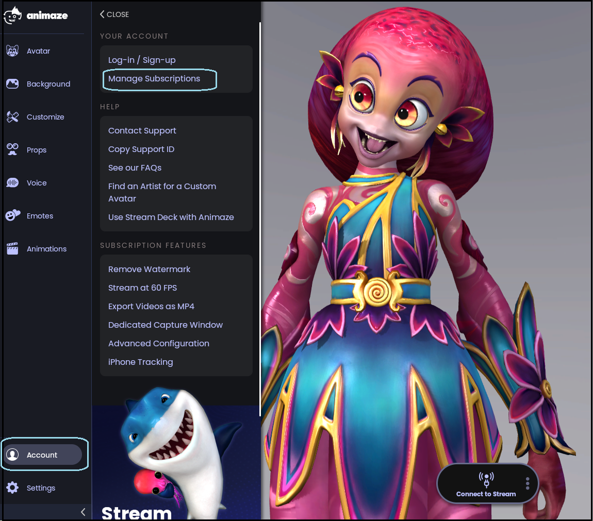
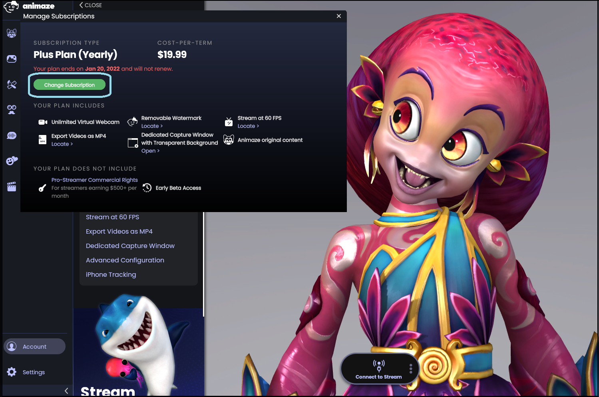
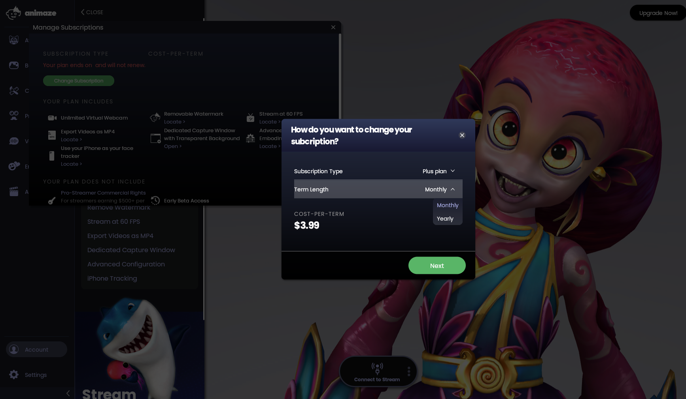
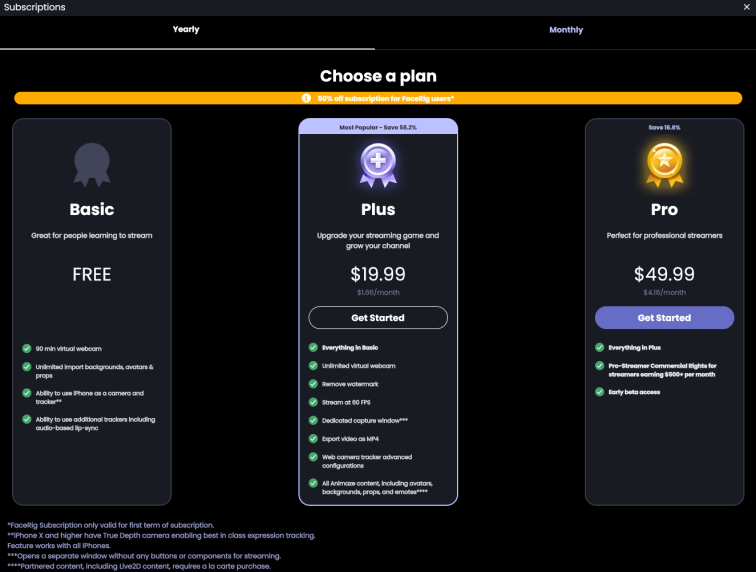

サブスクリプションを管理する方法
現在登録中のサブスクリプションの確認、新規サブスクリプションの購入、サブスクリプションのアップグレード、サブスクリプションのキャンセルは次の手順で行います:
Animazeアプリを開き、メニューバーの「アカウント」をクリックします。ドロップダウンメニューから「サブスクリプションの管理」を選択します

サブスクリプションを登録していない場合(またはサブスクリプションを登録したアカウント以外のアカウントでログインしている場合)、購入可能なサブスクリプションのオプションプランが次のように表示されます。表示されるサブスクリプションの価格は、お住まいの地域やプロモーション期間に合わせて異なる場合があります。
すでにサブスクリプションに登録している場合、現在登録中のサブスクリプションの概要が以下のように表示されます

サブスクリプションプランを変更したい場合、「サブスクリプションを変更」をクリックし、希望のプランと登録期間を選択します。

サブスクリプションをキャンセルする場合は、「サブスクリプションをキャンセル」をクリックし、キャンセルを確認します。登録中のサブスクリプションの期間が終了するまでは、現在のサブスクリプションの特典を受けることができます。
